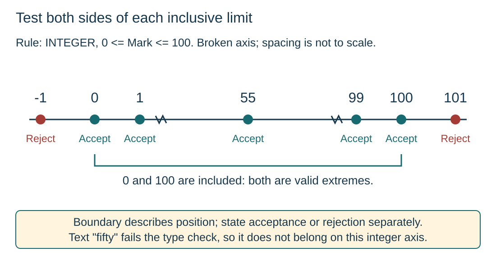

Distinguish ordinary, invalid and extreme values
S12.07.A01S12.07.A02
Visual overview
Test both sides of each inclusive limit

Visual transcript
- The input rule accepts integers from 0 to 100 inclusive.
- -1 and 101 are outside the permitted range and are rejected; 0, 1, 55, 99 and 100 are accepted.
- 0 and 100 are valid extremes; 55 is an ordinary normal value. Boundary testing includes valid and invalid neighbours.
- The axis is broken between the limit details and the ordinary example; spacing is not to scale. Text "fifty" fails the integer type check before the range test.
Core explanation
Classify the test data
- Normal: Valid data representative of ordinary use.
- Abnormal: Data violating a range, type or format rule; expect the specified rejection or error response.
- Extreme: The valid endpoints of the accepted range.
Boundary testing checks a limit and useful values on either side. Label each case with its expected result: boundary describes position, not whether the input is valid.
Keep the type rule separate
For integer marks from 0 to 100, the endpoints are accepted and -1 and 101 are rejected. The text "fifty" fails the integer type rule before a range check can apply.